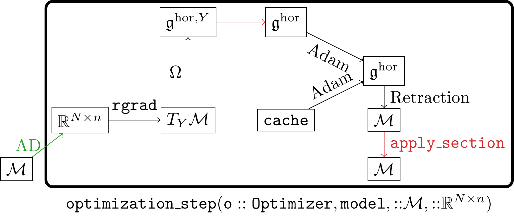

Optimizer
In order to generalize neural network optimizers to homogeneous spaces, a class of manifolds we often encounter in machine learning, we have to find a global tangent space representation which we call $\mathfrak{g}^\mathrm{hor}$ here.
Starting from an element of the tangent space $T_Y\mathcal{M}$[1], we need to perform two mappings to arrive at $\mathfrak{g}^\mathrm{hor}$, which we refer to by $\Omega$ and a red horizontal arrow:

Here the mapping $\Omega$ is a horizontal lift from the tangent space onto the horizontal component of the Lie algebra at $Y$.
The red line maps the horizontal component at $Y$, i.e. $\mathfrak{g}^{\mathrm{hor},Y}$, to the horizontal component at $\mathfrak{g}^\mathrm{hor}$.
The $\mathrm{cache}$ stores information about previous optimization steps and is dependent on the optimizer. The elements of the $\mathrm{cache}$ are also in $\mathfrak{g}^\mathrm{hor}$. Based on this the optimer (Adam in this case) computes a final velocity, which is the input of a retraction. Because this update is done for $\mathfrak{g}^{\mathrm{hor}}\equiv{}T_Y\mathcal{M}$, we still need to perform a mapping, called apply_section here, that then finally updates the network parameters. The two red lines are described in global sections.
References
- Brantner B. Generalizing Adam To Manifolds For Efficiently Training Transformers[J]. arXiv preprint arXiv:2305.16901, 2023.
- 1In practice this is obtained by first using an AD routine on a loss function $L$, and then computing the Riemannian gradient based on this. See the section of the Stiefel manifold for an example of this.